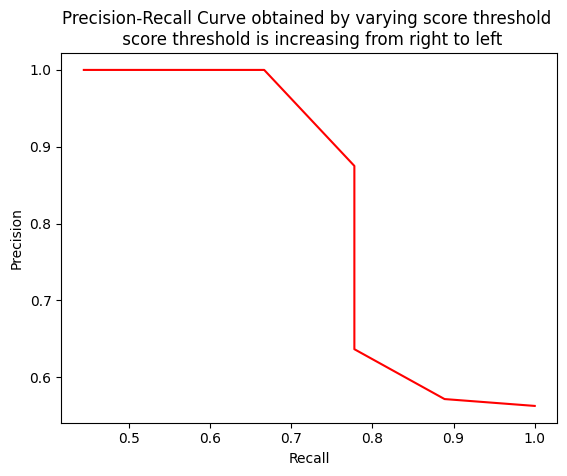

import numpy as np
y_true = ["positive", "negative", "negative", "positive", "positive", "positive", "negative", "positive", "negative", "positive", "positive", "positive", "positive", "negative", "negative", "negative"]
pred_scores = [0.7, 0.3, 0.5, 0.6, 0.55, 0.9, 0.4, 0.2, 0.4, 0.3, 0.7, 0.5, 0.8, 0.2, 0.3, 0.35]
thresholds = np.arange(start=0.2, stop=0.7, step=0.05)When a model has high recall but low precision, then the model classifies most of the positive samples correctly but it has many false positives (i.e. classifies many Negative samples as Positive). When a model has high precision but low recall, then the model is accurate when it classifies a sample as Positive but it may classify only some of the positive samples.
Note that as the recall increases, the precision decreases. The reason is that when the number of positive samples increases (high recall), the accuracy of classifying each sample correctly decreases (low precision). This is expected, as the model is more likely to fail when there are many samples.
import sklearn.metrics
def precision_recall_curve(y_true, pred_scores, thresholds):
precisions = []
recalls = []
for threshold in thresholds:
y_pred = ["positive" if score >= threshold else "negative" for score in pred_scores]
precision = sklearn.metrics.precision_score(y_true=y_true, y_pred=y_pred, pos_label="positive")
recall = sklearn.metrics.recall_score(y_true=y_true, y_pred=y_pred, pos_label="positive")
precisions.append(precision)
recalls.append(recall)
return precisions, recalls# when threshold(0.2) is low, all predicted samples become positive and it will definetly include actual positives
# so recall will be high but precision will be low because total predicted positives are more than actual positives
y_pred = ["positive" if score >= 0.2 else "negative" for score in pred_scores]
precision = sklearn.metrics.precision_score(y_true=y_true, y_pred=y_pred, pos_label="positive")
recall = sklearn.metrics.recall_score(y_true=y_true, y_pred=y_pred, pos_label="positive")
print(f'Precision {precision}, Recall {recall}')Precision 0.5625, Recall 1.0# when threshold(0.9) is high, positive samples will be actual positive samples so they become true positive which makes precision high
# that is the model is more than 0.9 sure that the sample is positive, so it will be an actual positive but still you are not covering all
# positives because of keeping high threshold
y_pred = ["positive" if score >= 0.9 else "negative" for score in pred_scores]
precision = sklearn.metrics.precision_score(y_true=y_true, y_pred=y_pred, pos_label="positive")
recall = sklearn.metrics.recall_score(y_true=y_true, y_pred=y_pred, pos_label="positive")
print(f'Precision {precision}, Recall {recall}')Precision 1.0, Recall 0.1111111111111111precisions, recalls = precision_recall_curve(y_true, pred_scores, thresholds)
print(f'Precision list {precisions}')
print(f'Recall list {recalls}')Precision list [0.5625, 0.5714285714285714, 0.5714285714285714, 0.6363636363636364, 0.7, 0.875, 0.875, 1.0, 1.0, 1.0]
Recall list [1.0, 0.8888888888888888, 0.8888888888888888, 0.7777777777777778, 0.7777777777777778, 0.7777777777777778, 0.7777777777777778, 0.6666666666666666, 0.5555555555555556, 0.4444444444444444]import matplotlib.pyplot as plt
plt.plot(recalls, precisions, color="red")
plt.xlabel("Recall")
plt.ylabel("Precision")
plt.title("Precision-Recall Curve obtained by varying score threshold \n score threshold is increasing from right to left")
plt.show()
Similarly, if we vary IOU threshold then we will get another precision recall curve
def compute_ap(recall, precision):
#from ultralytics
# Append sentinel values to beginning and end
mrec = np.concatenate(([0.0], recall, [1.0]))
mpre = np.concatenate(([1.0], precision, [0.0]))
print(f'mpre {mpre}')
print(f'np.flip {np.flip(mpre)}')
print(f'np.accumulate.maximum {np.maximum.accumulate(np.flip(mpre))}')
# Compute the precision envelope
mpre = np.flip(np.maximum.accumulate(np.flip(mpre)))
# Integrate area under curve
method = "interp" # methods: 'continuous', 'interp'
if method == "interp":
x = np.linspace(0, 1, 101) # 101-point interp (COCO)
ap = np.trapz(np.interp(x, mrec, mpre), x) # integrate
else: # 'continuous'
i = np.where(mrec[1:] != mrec[:-1])[0] # points where x-axis (recall) changes
ap = np.sum((mrec[i + 1] - mrec[i]) * mpre[i + 1]) # area under curve
return ap, mpre, mrecdef smooth(y, f=0.05):
"""Box filter of fraction f."""
nf = round(len(y) * f * 2) // 2 + 1 # number of filter elements (must be odd)
p = np.ones(nf // 2) # ones padding
yp = np.concatenate((p * y[0], y, p * y[-1]), 0) # y padded
return np.convolve(yp, np.ones(nf) / nf, mode="valid") # y-smootheddef ap_per_class(
tp, conf, pred_cls, target_cls, plot=False,eps=1e-16):
# Sort by objectness
i = np.argsort(-conf)
tp, conf, pred_cls = tp[i], conf[i], pred_cls[i] # decreasing order of confidences
tp = tp.reshape((tp.shape[0],1))
# Find unique classes
unique_classes, nt = np.unique(target_cls, return_counts=True)
nc = unique_classes.shape[0] # number of classes, number of detections
# Create Precision-Recall curve and compute AP for each class
x, prec_values = np.linspace(0, 1, 1000), []
# Average precision, precision and recall curves
ap, p_curve, r_curve = np.zeros((nc, tp.shape[1])), np.zeros((nc, 1000)), np.zeros((nc, 1000))
for ci, c in enumerate(unique_classes):
i = pred_cls == c
n_l = nt[ci] # number of labels or ground truth
n_p = i.sum() # number of predictions
if n_p == 0 or n_l == 0:
continue
# Accumulate FPs and TPs
fpc = (1 - tp[i]).cumsum(0)
tpc = tp[i].cumsum(0)
# Recall
recall = tpc / (n_l + eps) # recall curve
print(f'recall {recall[:,0]}')
# print(f'-conf[i] {-conf[i]}')
r_curve[ci] = np.interp(-x, -conf[i], recall[:, 0], left=0) # negative x, xp because xp decreases
# print(f'r_curve[ci] {r_curve[ci]}')
# Precision
precision = tpc / (tpc + fpc) # precision curve
print(f'precision {precision[:,0]}')
# print(f'-conf[i] {-conf[i]}')
p_curve[ci] = np.interp(-x, -conf[i], precision[:, 0], left=1) # p at pr_score
# print(f'p_curve[ci] {p_curve[ci]}')
# AP from recall-precision curve
for j in range(tp.shape[1]):
ap[ci, j], mpre, mrec = compute_ap(recall[:, j], precision[:, j])
print(f'AP {ap[ci,j]}')
if plot and j == 0:
prec_values.append(np.interp(x, mrec, mpre))
prec_values = np.array(prec_values) # (nc, 1000)
# Compute F1 (harmonic mean of precision and recall)
f1_curve = 2 * p_curve * r_curve / (p_curve + r_curve + eps)
i = smooth(f1_curve.mean(0), 0.1).argmax() # max F1 index
p, r, f1 = p_curve[:, i], r_curve[:, i], f1_curve[:, i] # max-F1 precision, recall, F1 values
tp = (r * nt).round() # true positives
fp = (tp / (p + eps) - tp).round() # false positives
# return tp, fp, p, r, ap, f1, unique_classes.astype(int), p_curve, r_curve, f1_curve, x, prec_values
return 1True positives are decided using IOU
class 1 p = 1, r = 0.33 p = 0.5, r = 0.33 p = 0.66, r = 0.66
class 2 p = 1, r = 0.5 p = 0.5, r = 0.5
tp = np.array([1,0,1,1,0])
conf = np.array([1,1,1,1,1])
pred_cls = np.array(['1','1','1','2','2'])
target_cls = np.array(['1','1','1','2','2'])
ap_per_class(tp, conf, pred_cls, target_cls, plot=False,eps=1e-16)recall [0.33333333 0.33333333 0.66666667]
precision [1. 0.5 0.66666667]
mpre [1. 1. 0.5 0.66666667 0. ]
np.flip [0. 0.66666667 0.5 1. 1. ]
np.accumulate.maximum [0. 0.66666667 0.66666667 1. 1. ]
AP 0.6672
recall [0.5 0.5]
precision [1. 0.5]
mpre [1. 1. 0.5 0. ]
np.flip [0. 0.5 1. 1. ]
np.accumulate.maximum [0. 0.5 1. 1. ]
AP 0.62249999999999991